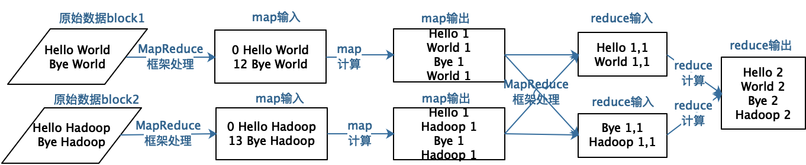
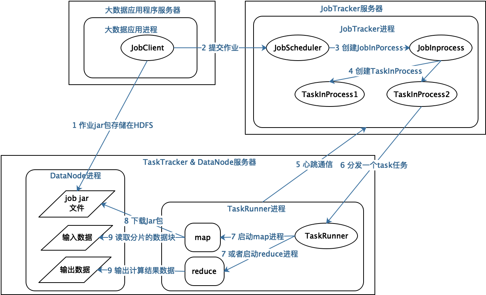
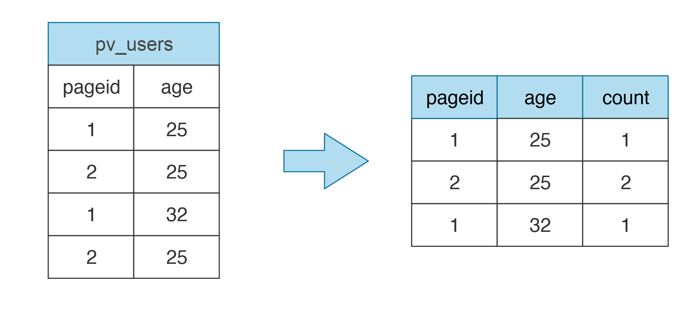
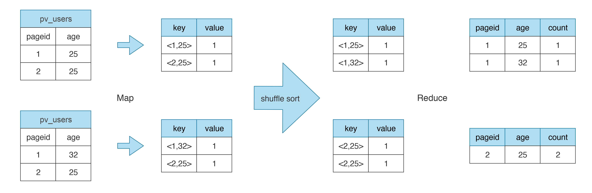
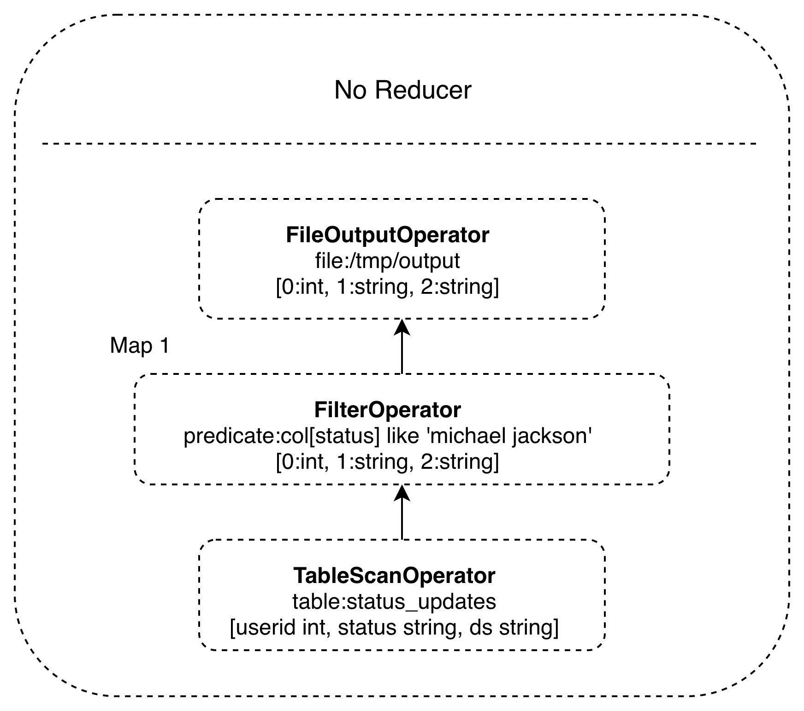
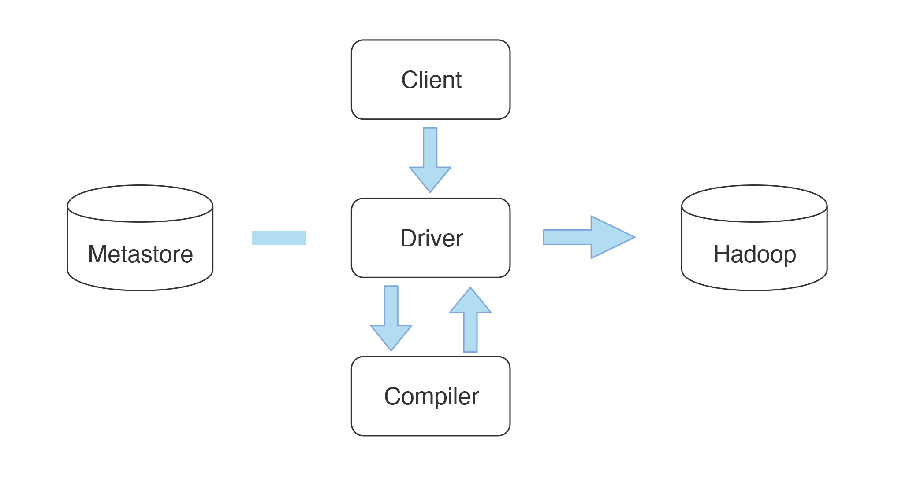
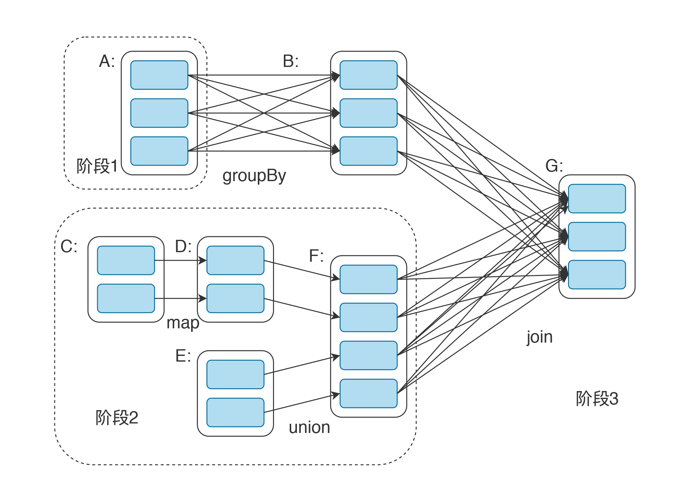
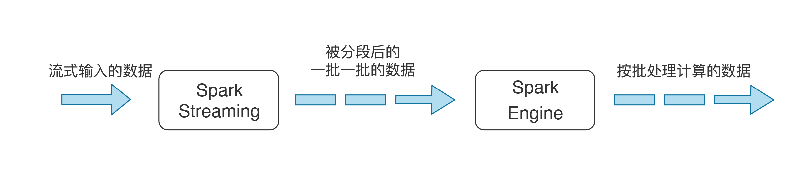
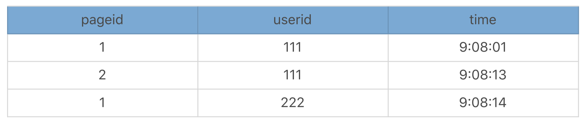
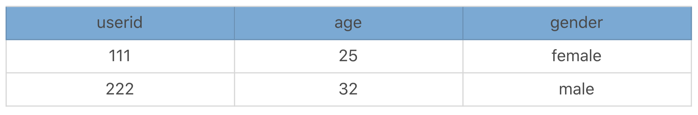

- 00 开篇词 掌握软件开发技术的第一性原理.md
- 01 程序运行原理：程序是如何运行又是如何崩溃的？.md
- 02 数据结构原理：Hash表的时间复杂度为什么是O(1)？.md
- 03 Java虚拟机原理：JVM为什么被称为机器（machine）？.md
- 04 网络编程原理：一个字符的互联网之旅.md
- 05 文件系统原理：如何用1分钟遍历一个100TB的文件？.md
- 06 数据库原理：为什么PrepareStatement性能更好更安全？.md
- 07 答疑 Java Web程序的运行时环境到底是怎样的？.md
- 07 编程语言原理：面向对象编程是编程的终极形态吗？.md
- 08 软件设计的方法论：软件为什么要建模？.md
- 09 软件设计实践：如何使用UML完成一个设计文档？.md
- 10 软件设计的目的：糟糕的程序员比优秀的程序员差在哪里？.md
- 11 软件设计的开闭原则：如何不修改代码却能实现需求变更？.md
- 12 软件设计的依赖倒置原则：如何不依赖代码却可以复用它的功能？.md
- 13 软件设计的里氏替换原则：正方形可以继承长方形吗？.md
- 14 软件设计的单一职责原则：为什么说一个类文件打开最好不要超过一屏？.md
- 15 软件设计的接口隔离原则：如何对类的调用者隐藏类的公有方法？.md
- 16 设计模式基础：不会灵活应用设计模式，你就没有掌握面向对象编程.md
- 17 设计模式应用：编程框架中的设计模式.md
- 18 反应式编程框架设计：如何使程序调用不阻塞等待，立即响应？.md
- 19 组件设计原则：组件的边界在哪里？.md
- 20 答疑 对于设计模式而言，场景到底有多重要？.md
- 20 领域驱动设计：35岁的程序员应该写什么样的代码？.md
- 21 分布式架构：如何应对高并发的用户请求.md
- 22 缓存架构：如何减少不必要的计算？.md
- 23 异步架构：如何避免互相依赖的系统间耦合？.md
- 24 负载均衡架构：如何用10行代码实现一个负载均衡服务？.md
- 25 数据存储架构：如何改善系统的数据存储能力？.md
- 26 搜索引擎架构：如何瞬间完成海量数据检索？.md
- 27 微服务架构：微服务究竟是灵丹还是毒药？.md
- 28 高性能架构：除了代码，你还可以在哪些地方优化性能？.md
- 29 高可用架构：我们为什么感觉不到淘宝应用升级时的停机？.md
- 30 安全性架构：为什么说用户密码泄漏是程序员的锅？.md
- 31 大数据架构：大数据技术架构的思想和原理是什么？.md
- 32 AI与物联网架构：从智能引擎到物联网平台.md
- 33 区块链技术架构：区块链到底能做什么？.md
- 33 答疑 互联网需要解决的技术问题是什么？.md
- 34 技术修炼之道：同样工作十几年，为什么有的人成为大厂架构师，有的人失业？.md
- 35 技术进阶之道：你和这个星球最顶级的程序员差几个等级？.md
- 36 技术落地之道：你真的知道自己要解决的问题是什么吗？.md
- 37 技术沟通之道：如何解决问题？.md
- 38 技术管理之道：你真的要转管理吗？.md
- 38 答疑 工作中的交往和沟通，都有哪些小技巧呢？.md
- 加餐 软件设计文档示例模板.md
- 结束语 期待未来的你，成为优秀的软件架构师.md
31 大数据架构：大数据技术架构的思想和原理是什么？
我在开篇词讲到，任何新技术都不是凭空产生的，都是在既有技术的基础之上，进行了一些创新性的组合扩展，应用到一些合适的场景之中，然后爆发出来巨大的生产力。后面几篇我要讲的大数据技术，区块链技术都是如此。
大数据技术其实是分布式技术在数据处理领域的创新性应用，本质和我们此前讲到的分布式技术思路一脉相承：用更多的计算机组成一个集群，提供更多的计算资源，从而满足更大的计算压力要求。
前面我们讨论的各种分布式缓存、负载均衡、分布式存储等都是讲如何在高并发的访问压力下，利用更多的计算机满足用户的请求访问压力。而大数据技术讨论的是，如何利用更多的计算机满足大规模的数据计算要求。
大数据就是将各种数据统一收集起来进行计算，发掘其中的价值。这些数据，既包括数据库的数据，也包括日志数据，还包括专门采集的用户行为数据；既包括企业内部自己产生的数据，也包括从第三方采购的数据，还包括使用网络爬虫获取的各种互联网公开数据。
面对如此庞大的数据，如何存储，如何利用大规模的服务器集群处理计算大量的数据，就是大数据技术的核心关键。
分布式文件存储HDFS架构
大规模数据计算首先要解决的是大规模数据的存储问题。如何将数百T，数百P的数据存储起来，通过一个文件系统统一管理，这本身就是一个极大的挑战。
我曾在专栏[第5篇]讲过，分布式文件系统HDFS的架构。
HDFS可以将数千台服务器组成一个统一的文件存储系统，其中NameNode服务器充当文件控制块的角色，进行文件元数据管理，即记录文件名、访问权限、数据存储地址等信息，而真正的文件数据则存储在DataNode服务器上。
DataNode以块为单位存储数据，所有的块信息，比如块ID、块所在的服务器IP地址等，都记录在NameNode，而具体的块数据则存储在DataNode上。理论上，NameNode可以将所有DataNode服务器上的所有数据块都分配给一个文件，也就是说，一个文件可以使用所有服务器的硬盘存储空间，达到数百P的大小。
此外，HDFS为了保证不会因为硬盘或者服务器损坏而导致文件损坏，还会对数据块进行复制，每个数据块都会存储在多台服务器上，甚至多个机架上。
大数据计算MapReduce架构
数据存储在HDFS上的最终目标还是为了计算，进行数据分析或者机器学习，从而获得有益的结果。但是如果像传统的应用程序那样，把HDFS当做普通文件，从文件读取数据，进行计算，那么对于需要一次计算数百T数据的大数据计算场景，就不知道要算到什么时候了。
大数据处理的经典计算框架是MapReduce。MapReduce的核心思想是对数据进行分片计算。既然数据是以块为单位分布存储在很多台服务器组成的集群上，那么能不能就在这些服务器上针对每个数据块进行分布式计算呢？
事实上，MapReduce将同一个计算程序启动在分布式集群的多台服务器上，每个服务器上的程序进程都读取本服务器上要处理的数据块进行计算，因此，大量的数据就可以同时进行计算了。但是这样的话，每个数据块的数据都是独立的，如果这些数据块需要进行关联计算怎么办？
MapReduce将计算过程分成两个部分，一个是map过程，每个服务器上会启动多个map进程，map优先读取本地数据进行计算，计算后输出一个<key, value>集合。另一个是reduce过程，MapReduce在每个服务器上都启动多个reduce进程，然后对所有map输出的<key, value>集合进行shuffle操作。所谓shuffle就是将相同的key发送到同一个reduce进程，在reduce中完成数据关联计算。
我们以经典的WordCount，也就是统计所有数据中相同单词的词频数据为例，看看map和reduce的处理过程。

假设原始数据有两个数据块，MapReduce框架启动两个map进程进行处理，分别读入数据。map函数对输入数据进行分词处理，然后针对每个单词输出<单词, 1>这样的<key, value>结果。然后，MapReduce框架进行shuffle操作，相同的key发送给同一个reduce进程，reduce的输入就是<key, value列表>这样的结构，即相同key的value合并成一个value列表。
在这个例子中，这个value列表就是很多个1组成的列表。reduce对这些1进行求和操作，就得到每个单词的词频结果了。具体的MapReduce程序如下：
public class WordCount {
public static class TokenizerMapper
extends Mapper<Object, Text, Text, IntWritable>{
private final static IntWritable one = new IntWritable(1);
private Text word = new Text();
public void map(Object key, Text value, Context context
) throws IOException, InterruptedException {
StringTokenizer itr = new StringTokenizer(value.toString());
while (itr.hasMoreTokens()) {
word.set(itr.nextToken());
context.write(word, one);
}
}
}
public static class IntSumReducer
extends Reducer<Text,IntWritable,Text,IntWritable> {
private IntWritable result = new IntWritable();
public void reduce(Text key, Iterable<IntWritable> values,
Context context
) throws IOException, InterruptedException {
int sum = 0;
for (IntWritable val : values) {
sum += val.get();
}
result.set(sum);
context.write(key, result);
}
上面讲述了map和reduce进程合作完成数据处理的过程，那么这些进程是如何在分布式的服务器集群上启动的呢？数据是如何流动，最终完成计算的呢？我们以MapReduce1为例看下这个过程。

MapReduce1主要有JobTracker和TaskTracker两种进程角色，JobTracker在MapReduce集群中只有一个，而TaskTracker则和DataNode一起，启动在集群的所有服务器上。
MapReduce应用程序JobClient启动后，会向JobTracker提交作业，JobTracker根据作业中输入文件路径分析，需要在哪些服务器上启动map进程，然后就向这些服务器上的TaskTracker发送任务命令。
TaskTracker收到任务后，启动一个TaskRunner进程下载任务对应的程序，然后反射加载程序中的map函数，读取任务中分配的数据块，进行map计算。map计算结束后，TaskTracker会对map输出进行shuffle操作，然后TaskRunner加载reduce函数进行后续计算。
HDFS和MapReduce都是Hadoop的组成部分。
大数据仓库Hive架构
MapReduce虽然只有map和reduce两个函数，却几乎可以满足任何大数据分析和机器学习的计算场景。不过复杂的计算可能需要多个job才能完成，这些job之间还需要根据其先后依赖关系进行作业编排，开发比较复杂。
数据分析传统上主要使用SQL进行分析，如果能根据SQL自动生成MapReduce，那么可以极大降低大数据技术在数据分析领域的应用门槛。
Hive就是这样一个工具。我们看下，对于如下一条常见的SQL语句，Hive是如何将其转换成MapReduce计算的。
SELECT pageid, age, count(1) FROM pv_users GROUP BY pageid, age;
这是一条常见的SQL统计分析语句，统计不同年龄的用户访问不同网页的兴趣偏好，具体数据输入和执行结果示例如下。

我们看这个示例就会发现，这个计算场景和WordCount很像。事实上也确实如此，我们可以用MapReduce的计算过程完成这条SQL的处理。

map函数输出的key是表的行记录，value是1，reduce函数对相同的行记录，也就是相同的key的value集合进行求和计算，就得到最终的SQL输出结果了。
那么Hive要做的就是将SQL翻译成MapReduce程序代码，实际上，Hive内置了很多Operator，每个Operator完成一个特定的计算过程，Hive将这些Operator构造成一个有向无环图DAG，然后根据这些Operator之间是否存在shuffle将其封装到map或者reduce函数，就可以提交给MapReduce执行了。Operator组成的DAG图示例如下，这是一个包含where查询条件的SQL，where查询条件对应一个FilterOperator。

Hive整体架构如下，Hive的表数据存储在HDFS。表的结构，比如表名、字段名、字段之间的分隔符等存储在Metastore。用户通过Client提交SQL到Driver，Driver请求Compiler将SQL编译成如上示例的DAG执行计划，然后交给Hadoop执行。

快速大数据计算Spark架构
MapReduce主要使用硬盘存储计算过程中的数据，这样虽然可靠性比较高，但是性能其实比较差。此外，MapReduce只能使用map和reduce函数进行编程，虽然能够完成各种大数据计算，但是编程比较复杂。而且，受map和reduce编程模型简单的影响，复杂的的计算必须组合多个MapReduce job才能完成，编程难度进一步增加。
Spark在MapReduce基础上进行改进，主要使用内存进行中间计算数据存储，加快了计算执行时间，在某些情况下，性能可以提升上百倍。Spark的主要编程模型是RDD，弹性数据集。在RDD上定义了许多常见的大数据计算函数，利用这些函数，可以用极少的代码完成较为复杂的大数据计算。前面举例的WorkCount，如果用Spark编程，只需要三行代码：
val textFile = sc.textFile("hdfs://...")
val counts = textFile.flatMap(line => line.split(" "))
.map(word => (word, 1))
.reduceByKey(_ + _)
counts.saveAsTextFile("hdfs://...")
首先，从HDFS读取数据，构建出一个RDD textFile。然后，在这个RDD上执行三个操作：将输入数据的每一行文本用空格拆分成单词；将每个单词进行转换，word→(word, 1)，生成<Key, Value>的结构；相同的Key进行统计，统计方式是对Value求和。最后，将RDD counts写入到HDFS，完成结果输出。
上面代码中flatMap、map、reduceByKey都是Spark的RDD转换函数，RDD转换函数的计算结果还是RDD，所以上面三个函数可以写在一行代码，最后得到的还是RDD。Spark会根据程序中的转换函数生成计算任务执行计划，这个执行计划就是一个DAG。Spark可以在一个作业中完成非常复杂的大数据计算。
Spark DAG示例如下：

如上所示，A、C和E是从HDFS上加载的RDD，A经过groupBy分组统计转换函数后得到RDD B，C经过map转换函数后得到RDD D，D和E经过union合并转换函数后得到RDD F，B和F经过join连接转换函数后得到最终结果RDD G。
大数据流计算架构
Spark虽然比MapReduce快很多，但是大多数场景下，计算耗时依然是分钟级别的，这种计算一般被称为大数据批处理计算。而在实际应用中，有些时候需要在毫秒级完成不断输入的海量数据的计算处理，比如实时对摄像头采集的数据进行监控分析，这就是所谓的大数据流计算。
早期比较著名的流式大数据计算引擎是Storm，后来随着Spark的火爆，Spark上的流式计算引擎Spark Streaming也逐渐流行起来。Spark Streaming的架构原理是将实时流入的数据切分成小的一批一批的数据，然后将这些小的一批数据交给Spark执行。由于数据量比较小，Spark Streaming又常驻系统，不需要重新启动，因此可以毫秒级完成计算，看起来像是实时计算一样。

最近几年比较流行的大数据引擎Flink其架构原理其实和Spark Streaming很相似，随着数据源的不同，根据数据量和计算场景的要求，可以灵活适应流计算和批处理计算。
小结
大数据技术可以说是分布式技术的一个分支，都是面临大量的计算压力，采用分布式服务器集群的方案解决问题。差别是大数据技术要处理的数据具有关联性，所以需要有个中心服务器进行管理，NameNode、JobTracker都是这样的中心服务器。
思考题
SQL生成MapReduce计算的时候，如果遇到join这样的SQL操作，map函数和reduce函数该如何设计？以如下SQL和输入数据为例：
SELECT pv.pageid, u.age FROM page_view pv JOIN user u ON (pv.userid = u.userid);
page_view：

user：

© 2019 - 2023 Liangliang Lee. Powered by Vert.x and hexo-theme-book.